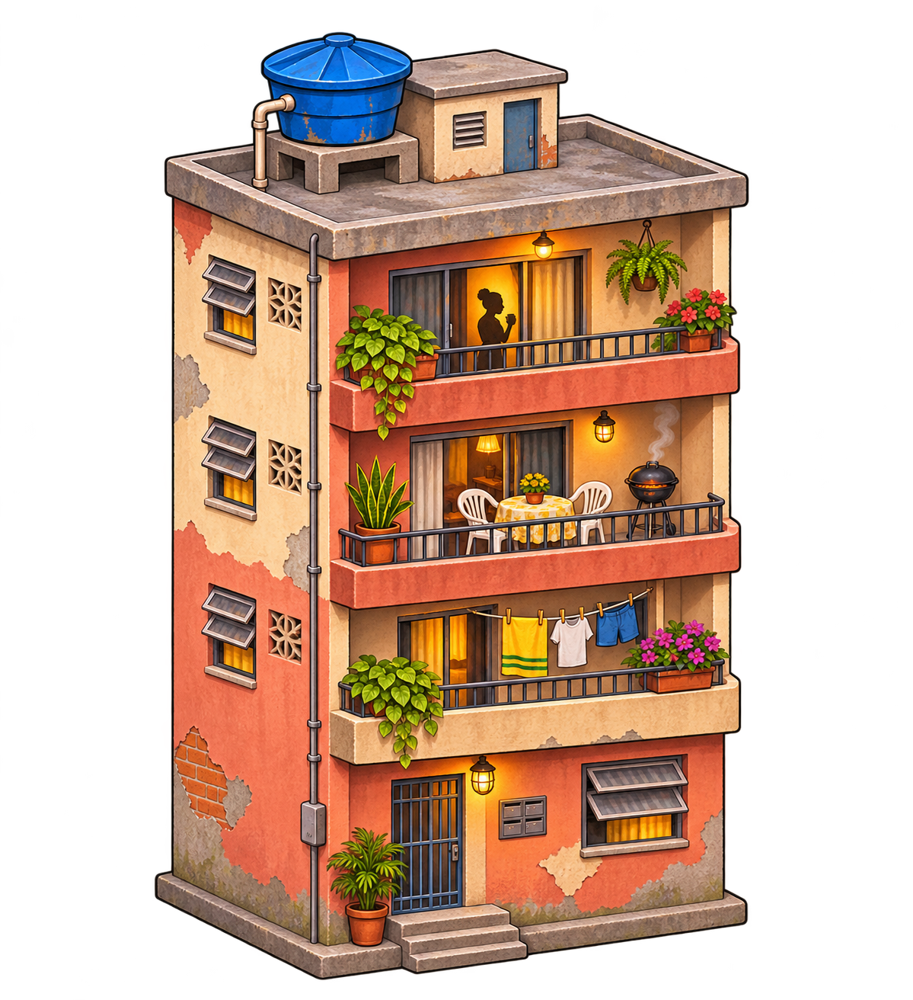
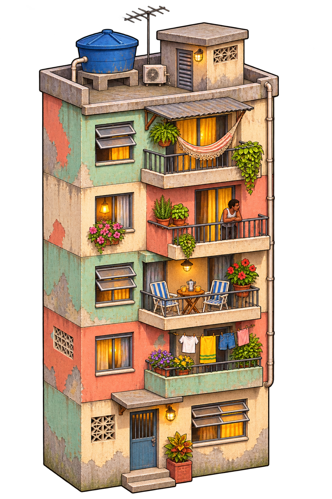
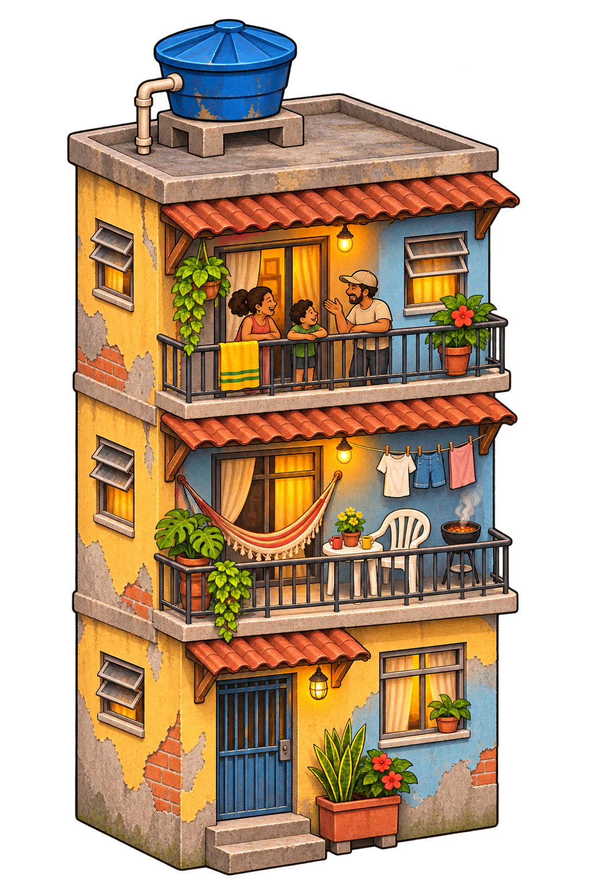

01 · 4 pavimentos
Reboco desgastado, sacada gourmet, churrasqueira, plantas e varal.
Três sprites isométricos 2.5D • 3, 4 e 5 pavimentos • fachadas vividas

Reboco desgastado, sacada gourmet, churrasqueira, plantas e varal.

Fachada em tons de verde e coral, rede, morador na sacada e caixa d’água.

Família na varanda, rede, churrasqueira, plantas e caixa d’água.